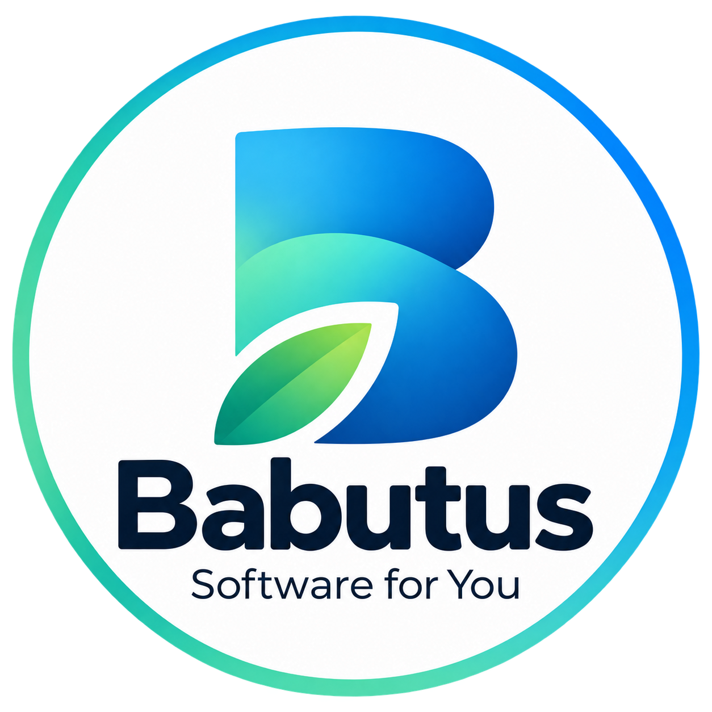
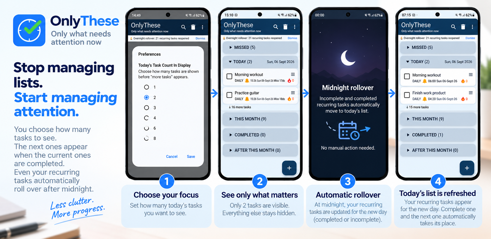

Too Many Tasks? Focus on What Matters Now | OnlyThese
Too many tasks competing for your attention? OnlyThese helps you focus on what needs attention now while keeping your longer-term commitments.

Babutus
We turn everyday problems into simple software products.
We build and own our products independently, from idea to release.
View our product →Product · Version 1.0
A task manager designed to manage attention, not just tasks.
OnlyThese keeps your commitments there without making you carry all of them in your head at once.
How do I keep my long-term commitments alive while dealing with today’s demands?
You choose how many tasks to see. The next ones appear when the current ones are completed. Even your recurring tasks automatically roll over after midnight.

A complete User Guide will be provided here for people who want the detailed feature-by-feature explanation.
Too many tasks competing for your attention? OnlyThese helps you focus on what needs attention now while keeping your longer-term commitments.
OnlyThese is a task manager designed to help you manage your attention instead of keeping your entire task list competing for attention.
Google Playstore Closed test
OnlyThese is currently in closed testing. You can use the app and tell us whether this approach actually changes how you work.
Choose Join the test on the testing page.
Join the closed test →Open the Play Store page and install the app.
Install OnlyThese →Feedback